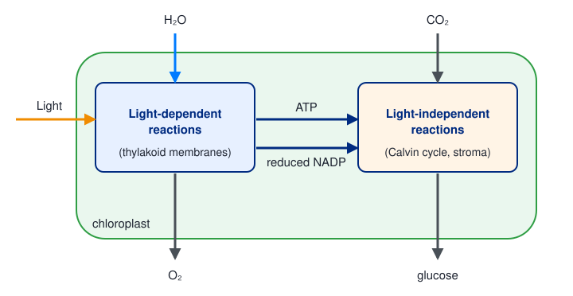
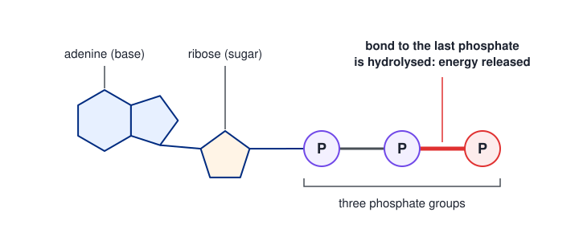
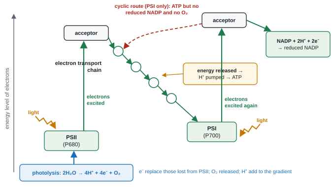
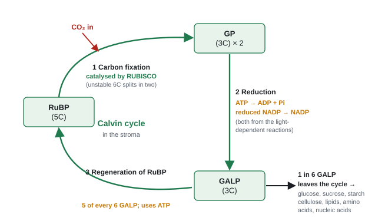
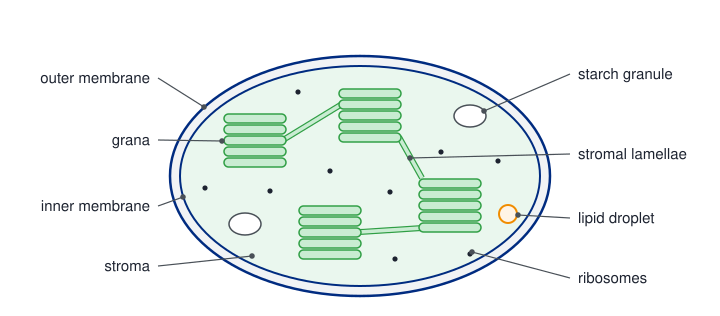
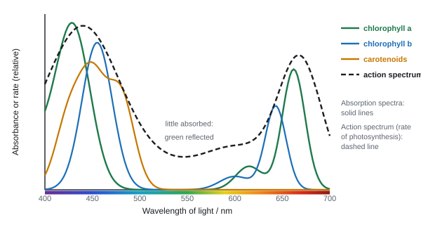
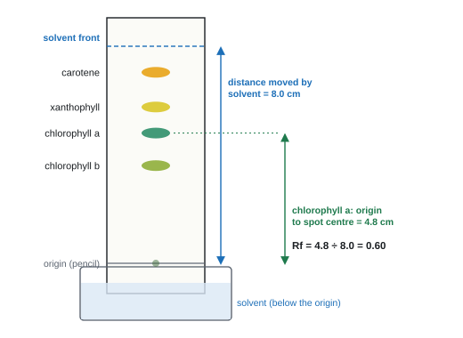
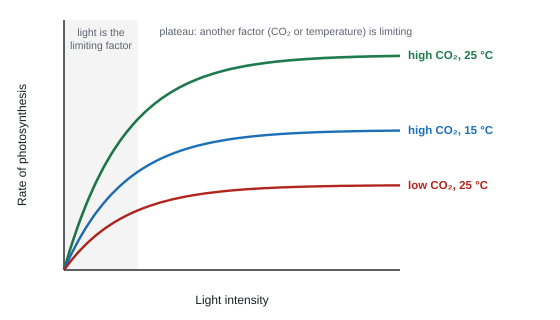

Photosynthesis
Photosynthesis is how green plants, algae and some bacteria turn light energy into chemical energy stored in sugars. Almost every food chain starts here, and the oxygen in the air is a by-product of the process. This page follows the energy from the moment light strikes a pigment molecule to the sugars made in the stroma, and explains why the rate of the process rises and falls.
Spec5.1Photosynthesis: the overall reaction
Understand photosynthesis as using light energy to split the strong bonds in water, storing the hydrogen in a fuel (glucose) by combining it with carbon dioxide, and releasing oxygen.
The big picture
- Plants, algae and some bacteria are autotrophs: they make their own organic molecules from simple inorganic ones (CO₂ and water), using light energy. Animals and fungi are heterotrophs: they get organic molecules by eating or absorbing them.
- Photosynthesis turns light energy into chemical energy stored in the bonds of glucose. Respiration later releases that energy.
6CO₂ + 6H₂O → C₆H₁₂O₆ + 6O₂ (light energy, chlorophyll)
What happens to each reactant
- Water: the O–H bonds in water are strong. Light energy is needed to break them (photolysis). This gives hydrogen (as H⁺ ions and electrons) and oxygen, which is released as a waste product.
- Hydrogen is the part worth keeping. It is passed on (via reduced NADP) and combined with CO₂ to make glucose. Glucose is the "fuel" that stores the hydrogen.
- Carbon dioxide supplies the carbon and the oxygen in glucose.
| Atoms in glucose | Come from |
|---|---|
| Carbon | carbon dioxide |
| Oxygen | carbon dioxide |
| Hydrogen | water |
| The O₂ released | water |
Two stages (details in 5.3 and 5.4)
| Stage | Where | Needs | Makes |
|---|---|---|---|
| Light-dependent reactions | thylakoid membranes | light, water, ADP + Pi, NADP | ATP, reduced NADP, O₂ (waste) |
| Light-independent reactions (Calvin cycle) | stroma | CO₂, ATP, reduced NADP | GALP → glucose and other organic molecules; ADP, Pi and NADP go back to the thylakoids |

Photosynthesis is a redox process. Water is oxidised (loses electrons and hydrogen). Carbon dioxide is reduced (gains hydrogen). Light supplies the energy to push the hydrogen "uphill" into glucose.
Worked example: energy from bond energies
A question gives the O–H bond energy as 463 kJ mol⁻¹ and says one O–H bond breaks in each water molecule in the equation 6CO₂ + 6H₂O → C₆H₁₂O₆ + 6O₂.
Energy needed = number of molecules × bonds broken per molecule × bond energy = 6 × 1 × 463 = 2778 kJ per mole of glucose.
The skill is reading the stem: which bonds, how many per molecule, how many molecules. Bonds in glucose itself are C–H, C–O, C–C and O–H.
- Sources of atoms: "C and O from carbon dioxide", "H from water". Not "O (in glucose) from water".
- Name the molecules (carbon dioxide, water), not just the elements.
- Why not all the sunlight is used: "not all wavelengths can be absorbed", "green light is reflected", "light is transmitted through the leaf". Shading and competition are ignored.
- Glucose is made in the stroma.
Often asked as: where the C, H and O in glucose come from; which stage uses CO₂ and which releases O₂ (MCQ); bond-energy calculations; why plants capture only a small share of the light energy.
Saying the oxygen in glucose comes from water. The O₂ released comes from water; the O in glucose comes from CO₂.
"Light reflected" on its own: say green light is reflected.
Examined in past papers even though the spec doesn't list it.
- Bond-energy sums: pick the right bonds and multiply by the number of molecules. Candidates often missed which bond types (C–H, C–O, C–C) were needed to reach a total (WBI14 Oct 2020).
- Losses of light energy before photosynthesis even starts: reflected (green), transmitted, wrong wavelength, hits non-photosynthetic parts (WBI14 Oct 2024).
Spec5.2ATP: photophosphorylation and hydrolysis
Understand that making ATP from ADP (photophosphorylation, in photosynthesis) needs energy, and that hydrolysing ATP gives an immediate supply of energy for biological processes.
What ATP is
- ATP (adenosine triphosphate) is a phosphorylated nucleotide: the base adenine, the pentose sugar ribose, and three phosphate groups.
- Removing one phosphate gives ADP (adenosine diphosphate) and inorganic phosphate (Pi).

Making ATP needs energy
ADP + Pi + energy → ATP + H₂O
- Adding a phosphate to ADP is phosphorylation, a condensation reaction catalysed by ATP synthase.
- The energy can come from:
- light, in the chloroplast: photophosphorylation (5.3);
- the oxidation of respiratory substrates, in the mitochondrion: oxidative phosphorylation (Topic 7).
- In both, the energy first builds a proton (H⁺) gradient across a membrane. H⁺ flow back through ATP synthase, and that flow drives phosphorylation (chemiosmosis).
Hydrolysing ATP releases energy
ATP + H₂O → ADP + Pi + energy
- Catalysed by ATP hydrolase (ATPase).
- Releases a small, manageable amount of energy (about 30 kJ mol⁻¹), so little is wasted as heat.
- It is one reaction, one enzyme, so energy is released immediately, exactly where it is needed. (Releasing energy from glucose takes dozens of steps.)
- ATP is small and soluble, so it moves easily around the cell.
- The released phosphate can be attached to another molecule (phosphorylating it), making it more reactive. This couples ATP hydrolysis to energy-requiring reactions.
- ATP is not a store: it is used within seconds and constantly remade from ADP + Pi. Glucose, starch and lipids are the stores.
Uses in plants: the Calvin cycle (reducing GP and regenerating RuBP), active transport of mineral ions into roots, protein synthesis, phloem loading.
Plants trap light energy, but light energy cannot drive reactions directly. It is first transferred to ATP (and reduced NADP), which then supply the energy for the Calvin cycle.
- "ATP is the {usable source of energy / energy currency}"; "light energy cannot be used (directly)"; "ATP is needed in the Calvin cycle to convert GP into GALP".
- Products of hydrolysis: "ADP and (inorganic) phosphate / Pi". Not "P" or "phosphorus". "Dephosphorylation" is accepted.
- Phosphorylation: "hydrogen ions pass through ATP synthase, releasing energy for phosphorylation of ADP".
- MCQ logic: ADP is phosphorylated and this needs energy; ATP is hydrolysed and this releases energy.
Often asked as: why plants need ATP even though they trap light; products of ATP hydrolysis; fill-in blanks on a photophosphorylation diagram (ADP, Pi, ATP); MCQs.
"ATP makes energy" or "ATP is energy". Energy can't be made. ATP is a source or carrier of energy.
Writing "P" for phosphate. If unsure of the symbol, write the word phosphate.
Answering "how light is converted into ATP" when the question asks why plants need ATP.
Examined in past papers even though the spec doesn't list it.
- ATP synthase and chemiosmosis appear in mark schemes for the light-dependent reactions (WBI14 Jan 2021).
- Glucose made in photosynthesis is respired to give the ATP needed for protein synthesis (WBI14 Jan 2020).
Spec5.3The light-dependent reactions
Understand how light energy excites electrons in chlorophyll, how those electrons drive ATP production and NADP reduction in cyclic and non-cyclic photophosphorylation, and how photolysis of water produces oxygen.
Where and what
- On the thylakoid membranes of the chloroplast.
- Chlorophyll and accessory pigments sit in protein complexes called photosystems. Each has a reaction centre chlorophyll a molecule. PSII absorbs best at 680 nm (P680); PSI at 700 nm (P700). (They are numbered in order of discovery, not the order electrons pass through them.)
- Products: ATP, reduced NADP, and oxygen (waste).

Non-cyclic photophosphorylation, step by step
- Light is absorbed by chlorophyll in PSII. Its energy excites electrons to a higher energy level, and they leave the chlorophyll (the chlorophyll is oxidised).
- The electrons are taken up by an electron acceptor and passed along a chain of electron carriers (the electron transport chain) in a series of redox reactions.
- As they move down the chain, the electrons lose energy. This energy pumps H⁺ from the stroma into the thylakoid space.
- H⁺ build up in the thylakoid space (a proton gradient). They diffuse back into the stroma through ATP synthase, which uses the energy to phosphorylate ADP → ATP (chemiosmosis).
- The electrons reach PSI. Light absorbed by PSI excites them again.
- The electrons pass to NADP. Together with H⁺ it becomes reduced NADP.
- Photolysis: PSII has lost electrons, so it must get them back. Light energy splits water:
2H₂O → 4H⁺ + 4e⁻ + O₂
- The electrons replace those lost from PSII.
- The H⁺ add to the proton gradient and are used to reduce NADP.
- The oxygen diffuses out of the leaf as a by-product (or is used in respiration).
The electron path is one-way, from water to NADP, which is why it is called non-cyclic.
Light absorbed by the antenna of photosystem II excites electrons in P680. They leave the chlorophyll and pass to an electron acceptor.
Photolysis of water replaces the lost electrons, releasing oxygen and adding hydrogen ions to the lumen.
Without this supply of electrons, P680 could not absorb light again and the flow would stop.
The electrons are passed along a chain of electron carriers in the thylakoid membrane in a series of redox reactions, losing energy at each step.
Some of that energy is used to pump hydrogen ions from the stroma across the thylakoid membrane into the lumen.
Moving ions against their concentration gradient needs energy, which comes from the electrons.
Hydrogen ions are now much more concentrated in the lumen than in the stroma. They can only diffuse back through channels in ATP synthase.
The flow of hydrogen ions through ATP synthase provides the energy to join ADP and Pi into ATP. Making ATP this way is chemiosmosis, and because light drives it, the process is photophosphorylation.
The electrons reach photosystem I, where light excites them again from P700 to a higher energy level, and they pass to a second electron acceptor.
The enzyme NADP reductase uses these electrons, together with hydrogen ions from the stroma, to reduce NADP to reduced NADP. Reduced NADP carries hydrogen to the Calvin cycle.
Cyclic photophosphorylation
- Uses PSI only. Excited electrons from PSI pass to the electron transport chain and then return to PSI.
- Their energy still pumps H⁺, so ATP is made.
- No reduced NADP, no photolysis, no oxygen.
| Non-cyclic | Cyclic | |
|---|---|---|
| Photosystems | PSII and PSI | PSI only |
| Electron source | water (photolysis) | PSI (electrons go round) |
| Final electron acceptor | NADP | PSI |
| ATP | yes | yes |
| Reduced NADP | yes | no |
| O₂ released | yes | no |
For "describe how light energy is used to make ATP", cover both routes: ATP is made in cyclic and non-cyclic photophosphorylation. Very few candidates say this, and the 4-mark version needs it.
- "Light is absorbed by {chlorophyll / photosystems}, which excites electrons" (or "releases high-energy electrons").
- "Electrons are passed along a series of electron carriers, releasing energy to phosphorylate ADP into ATP."
- Photolysis "{replaces electrons lost by chlorophyll / provides protons for formation of reduced NADP}".
- Purpose of the light-dependent reactions: "ATP and reduced NADP for the Calvin cycle".
- The product made only in non-cyclic is reduced NADP. NADPH is accepted; NADP, NADH or reduced NAD are not.
- Location: thylakoid membranes; H⁺ accumulate in the thylakoid space.
- Magnesium: "a component of chlorophyll, which absorbs light".
Often asked as: describe how light leads to ATP (4 marks); role of photolysis; role of chlorophyll; which product is only in non-cyclic; location MCQs; why a shortage of water or Mg²⁺ slows photosynthesis.
Light "hits" or "strikes" chlorophyll. The word that scores is absorbed. Examiners have flagged this in report after report.
Saying NADP is "made" in the light-dependent reactions. It is reduced.
Mixing up cyclic and non-cyclic: oxygen and reduced NADP come only from non-cyclic.
Saying the light-dependent reactions happen in the stroma, or "in the grana" without the membrane.
Examined in past papers even though the spec doesn't list it.
- Mg²⁺ is part of the chlorophyll molecule; Mg²⁺ uptake by roots needs active transport, so ATP and oxygen for aerobic respiration (WBI14 Jun 2023).
- Cyanobacteria have no chloroplasts: their light-dependent reactions happen on internal membranes (WBI14 Jan 2023).
- Less water reaching the leaf means less photolysis, so fewer electrons and H⁺ for the light-dependent reactions (WBI14 Jun 2024).
- Why cyclic exists: the Calvin cycle uses 3 ATP for every 2 reduced NADP. Non-cyclic alone gives too little ATP, so cyclic tops it up.
Spec5.4The light-independent reactions (Calvin cycle)
(i) Understand the light-independent reactions as the reduction of CO₂ using ATP and reduced NADP: carbon fixation in the Calvin cycle and the roles of GP, GALP, RuBP and RUBISCO. (ii) Know that the simple sugars made are used for respiration and to build polysaccharides, amino acids, proteins, lipids and nucleic acids.
The cycle in three steps (in the stroma)

- Carbon fixation. CO₂ diffuses into the stroma and combines with RuBP (ribulose bisphosphate, a 5-carbon compound). The enzyme is RUBISCO. The 6-carbon product is unstable and splits at once into two molecules of GP (glycerate 3-phosphate, 3-carbon).
- Reduction. GP is reduced to GALP (glyceraldehyde 3-phosphate, 3-carbon; some books call it triose phosphate, TP, or G3P).
- Reduced NADP supplies the hydrogen (it is oxidised back to NADP).
- ATP supplies the energy (hydrolysed to ADP + Pi).
- The NADP, ADP and Pi return to the thylakoids to be used again.
- Regeneration of RuBP. Most GALP (5 in every 6) is rearranged back into RuBP. This uses more ATP. Without regeneration the cell would run out of RuBP and carbon fixation would stop.
Carbon dioxide diffuses into the leaf through the stomata and into the stroma. The enzyme RUBISCO catalyses its combination with ribulose bisphosphate (RuBP), a 5-carbon compound. This is carbon fixation.
The 6-carbon product is unstable and immediately splits into two molecules of glycerate 3-phosphate (GP), a 3-carbon compound.
GP is reduced to glyceraldehyde 3-phosphate (GALP). Reduced NADP supplies the hydrogen and ATP supplies the energy, one of each for every GP.
This is the reduction step. Adding hydrogen stores chemical energy in the product.
Of every 12 GALP formed, 10 are used to regenerate 6 RuBP, which uses a further 6 ATP. The other 2 GALP leave the cycle and can form one glucose or other organic compounds.
Fixing 6 CO₂ therefore uses 18 ATP (12 for reduction and 6 for regeneration) and 12 reduced NADP. The ADP, Pi and NADP return to the thylakoids to be recharged.
Without a constant supply of ATP and reduced NADP, RuBP cannot be regenerated and carbon fixation soon stops.
Counting carbons
Worked example: six turns of the cycle
6 CO₂ + 6 RuBP (6 × 5C = 30C) → 12 GP (36C)
12 GP → 12 GALP, using 12 ATP and 12 reduced NADP
10 GALP (30C) → 6 RuBP (30C), using 6 ATP
2 GALP (6C) left over → 1 glucose (6C)
Totals per glucose: 18 ATP and 12 reduced NADP, so ATP : reduced NADP = 18 : 12 = 1.5 : 1.
Per CO₂ fixed: 3 ATP and 2 reduced NADP.
What happens if light or CO₂ changes
| Change | GP | RuBP | Why |
|---|---|---|---|
| Light reduced (or switched off) | rises | falls | less ATP and reduced NADP, so GP isn't reduced to GALP and builds up; RuBP is still used in fixation but is not regenerated |
| CO₂ reduced | falls | rises | less fixation, so less GP made; RuBP is still regenerated from GALP but not used up |
| Temperature lowered | both processes slow | RUBISCO and other Calvin cycle enzymes have less kinetic energy, so fewer enzyme–substrate complexes form | |
The Calvin cycle does not need light directly, but it stops within seconds in the dark because it runs out of ATP and reduced NADP. Don't call it the "dark reaction".
The model in the interactive section at the bottom of the page lets you make these changes and watch GP and RuBP respond.
What the products are used for
| Product | How it is made | Extra element needed |
|---|---|---|
| Glucose (hexose) | two GALP join | none |
| Sucrose (transport in phloem) | glucose + fructose | none |
| Starch (storage), cellulose (cell walls) | polymers of glucose | none |
| Lipids | glycerol from GALP; fatty acids from GALP via acetyl coenzyme A | none |
| Amino acids → proteins | from sugars + nitrogen; joined by peptide bonds in condensation reactions at ribosomes | nitrogen (from nitrate); some need sulfur (from sulfate) |
| Nucleotides → nucleic acids (and ATP) | sugar + base + phosphate | nitrogen (bases) and phosphorus (from phosphate) |
- Some glucose is respired to make the ATP these syntheses need.
- Animals, fungi and decomposers get these molecules by eating plants (or eating what ate them), so the sugars made here fuel almost every food chain.
"How does GALP become protein / root biomass?" wants a short chain, not the whole Calvin cycle: GALP → glucose → (with fructose) sucrose → transported in phloem → converted to amino acids using nitrates → joined by peptide bonds → protein; some glucose respired for ATP.
- Fixation: "carbon dioxide {binds to / reacts with} RuBP", "catalysed by RUBISCO", "forming GP".
- Regeneration: "(otherwise) the cell will run out of RuBP", so "no carbon fixation".
- "GALP converted into {hexose / glucose}"; "amino acids made from glucose and nitrates"; "amino acids joined by peptide bonds / condensation"; "glucose respired to produce ATP".
- Why glucose alone can't make amino acids: "amino acids contain nitrogen", "some contain sulfur", "nitrogen from nitrates, sulfur from sulfates". "Amino acids have an amino group" alone is too vague.
- Tick grids: protein needs nitrate; nucleic acid needs nitrate and phosphate; triglyceride needs neither.
- Transport: "glucose and fructose used to produce sucrose", "sucrose / amino acids moved in the phloem". Not "glucose transported".
- GP and GALP have accepted alternative names (triose phosphate, G3P). Carbon numbers are not required but help.
Often asked as: describe carbon fixation; why most GALP stays in the cycle; ATP : reduced NADP ratio; how GALP becomes protein, root biomass or another product; why a plant needs nitrate or sulfate; temperature and RUBISCO.
Writing out the whole Calvin cycle when only "GALP plus nitrate → amino acids" was wanted.
Forgetting nitrate when explaining how plants make proteins.
Saying glucose is transported in the phloem. It is sucrose.
Saying the Calvin cycle "happens at night".
Examined in past papers even though the spec doesn't list it.
- Calculating the ATP : reduced NADP ratio for a number of turns (WBI14 Jan 2025).
- Phosphate is needed for ATP, nucleotides and phospholipids; nitrate for amino acids and the bases in nucleotides (WBI14 Jun 2023).
- Mineral ions such as phosphate are taken up by active transport and travel in the xylem (WBI14 Jan 2023).
- Mutualistic fungi (mycorrhizae) supply plants with nitrogen compounds (WBI14 Jun 2024).
Spec5.5Chloroplast structure
Understand how the structure of a chloroplast suits it to photosynthesis.
The parts and why they help

| Feature | Description | How it helps photosynthesis |
|---|---|---|
| Envelope | double membrane (inner and outer) | controls what enters and leaves; inner membrane has transport proteins |
| Thylakoids | flattened membrane sacs | membranes hold photosystems, electron carriers and ATP synthase: the light-dependent reactions |
| Grana (singular granum) | stacks of thylakoids | huge membrane surface area for pigments and light absorption |
| Intergranal lamellae | thylakoid membranes joining grana | also carry PSI; link the grana |
| Thylakoid space (lumen) | inside each thylakoid | small volume, so a proton gradient builds quickly for ATP synthesis |
| Stroma | fluid matrix around the thylakoids | contains RUBISCO and the other Calvin cycle enzymes; close to the thylakoids, so ATP and reduced NADP reach it quickly |
| Starch grains | in the stroma | store the glucose made |
| Circular DNA and 70S ribosomes | in the stroma | code for and make some chloroplast proteins (e.g. part of RUBISCO) |
| Lipid droplets | in the stroma | lipid store (not credited as a "feature" label) |
- Chloroplasts are about 2–10 µm long, so you need an electron microscope to see the grana.
- Not every plant cell has them: root cells and phloem sieve tubes don't.
When asked how a chloroplast is adapted, link each structure to a stage: thylakoid membranes with photosystems, electron carriers and ATP synthase for the light-dependent reactions; a lumen in which H⁺ accumulates; and a stroma containing RUBISCO and other Calvin cycle enzymes.
Worked example: actual size of a chloroplast
On an electron micrograph at ×8000 a chloroplast measures 58 mm.
Actual size = image size ÷ magnification. Convert first: 58 mm = 58 000 µm.
58 000 ÷ 8000 = 7.25 µm = 7.3 µm (2 s.f.).
In standard form, keep one non-zero digit before the decimal point: 7.3 × 10⁻³ mm.
- Labels that score (beyond stroma and thylakoid): "DNA (loop)", "starch grain", "{envelope / inner membrane / outer membrane}", "grana", "intergranal lamellae", "(70S) ribosome". Lipid droplets are ignored; "linear DNA" and "stoma" are wrong.
- Chloroplast v mitochondrion: similarities "both have (circular) DNA", "both have (70S) ribosomes", "both have a double membrane"; differences "stroma v matrix", "thylakoids / grana v cristae", "starch grains only in chloroplasts".
- Thylakoid membrane v cell surface membrane: "both have a phospholipid bilayer"; thylakoid "has chlorophyll / photosystems, ATP synthase, electron carriers".
- Why lots of thylakoids: comparative, "more light absorbed / more chlorophyll / more ATP and reduced NADP".
Often asked as: draw and label three features; compare with a mitochondrion; compare membranes; label MCQs; magnification and actual size; why many thylakoids.
Compare questions answered with two separate descriptions. Pair each point: "both have…", "chloroplasts have… whereas mitochondria have…". Separate points are not pieced together.
Describing what the membranes do when the question asks about structure.
Calling a chloroplast "a cell", or labelling "inner part" instead of a named structure.
Standard form with two digits before the decimal point (73 × 10⁻⁴).
Examined in past papers even though the spec doesn't list it.
- Chloroplasts and mitochondria both have 70S ribosomes and circular DNA, like bacteria (WBI14 Jun 2021).
- Chloroplast DNA replicates in the light, independently of mitosis (WBI14 Oct 2021).
- Size conversions between nm, µm and mm for ribosomes, thylakoids and starch grains (WBI14 Jan 2022).
- Amyloplasts and vacuoles contain no DNA (WBI14 Jun 2025).
Spec5.6Absorption and action spectra
Understand what an absorption spectrum and an action spectrum are.
Definitions
- Absorption spectrum: how much light a pigment absorbs at each wavelength.
- Action spectrum: the rate of photosynthesis at each wavelength of light.

The pigments
| Pigment | Colour | Absorbs mainly |
|---|---|---|
| Chlorophyll a | blue-green | blue-violet (~430 nm) and red (~660 nm); the reaction-centre pigment |
| Chlorophyll b | yellow-green | blue (~450 nm) and orange-red (~640 nm) |
| Carotenoids (β-carotene, xanthophylls) | orange, yellow | blue-violet (400–500 nm) |
- Chlorophylls absorb little green light: it is reflected (or transmitted), so leaves look green.
- The accessory pigments (chlorophyll b, carotenoids) absorb wavelengths chlorophyll a absorbs poorly, and pass the energy on to the reaction centre. Having several pigments widens the range of wavelengths a plant can use.
Reading the two together
- The action spectrum closely follows the combined absorption spectra. That is the evidence that the light absorbed by these pigments is what drives photosynthesis.
- The action spectrum doesn't fall to zero in the green: some green light is absorbed by accessory pigments, and light bouncing around inside a thick leaf gets more chances to be absorbed.
- To measure an action spectrum: shine light of one wavelength at a time (coloured filters or LEDs) of the same intensity onto an aquatic plant, and measure the rate of oxygen production (as in CP10, 5.8).
- Action spectrum: "rate of photosynthesis at different wavelengths of light".
- Sketching an action spectrum from an absorption spectrum: "a line that roughly follows the contours of the absorption spectrum" and "does not drop to zero"; the blue peak is higher than the red peak.
- Why several pigments: "so that light can be absorbed at different wavelengths", "so that the rate of photosynthesis is maximised".
- Least absorbed: green (around 500–560 nm).
- Ratios of peak heights: give as a ratio (e.g. 1.2 : 1), not a percentage.
Often asked as: define action spectrum; draw it on an absorption graph; why plants have different pigments; read absorbance values; which colour of light boosts growth.
Swapping the two definitions. Absorption = pigment absorbs; action = rate of photosynthesis.
Long answers to a 2-mark question. "To maximise light absorption" is usually the key phrase, not a description of the graph in words.
Examined in past papers even though the spec doesn't list it.
- Seaweeds at different depths: different seaweeds have different pigment mixtures, so each absorbs the wavelengths that reach its depth (red light penetrates least far). Living at different depths also reduces competition for light (WBI14 Jun 2024).
- Photosynthetic bacteria have absorption peaks at different wavelengths from plants (about 380 nm and 880 nm), so they can use light plants don't (WBI14 Jan 2023).
- Blue and red light give the highest growth rates; amber the lowest (WBI14 Oct 2024).
Spec5.7Chromatography of chloroplast pigments
Understand that chloroplast pigments can be separated by chromatography and identified by their Rf values.
How it works
- A stationary phase (chromatography paper or a thin-layer plate) and a mobile phase (a non-polar solvent).
- Each pigment has its own balance between solubility in the solvent and attraction to the stationary phase. More soluble pigments are carried further. So the pigments separate into bands.
Pigment chromatography: method in brief
- Grind a fresh, green leaf with a little sand and propanone (acetone). Grinding breaks cells and membranes; the solvent dissolves the pigments (they are not water-soluble).
- Draw an origin line in pencil about 2 cm from the bottom of the paper or TLC plate. (Ink would dissolve and run.)
- Use a fine capillary tube to put a small, concentrated spot of extract on the origin. Let it dry, then add more on the same spot. Repeat 5–10 times.
- Stand the paper in a little solvent in a covered tank, with the solvent level below the origin (otherwise the pigments dissolve into the solvent pool).
- Remove it when the solvent is near the top. Mark the solvent front at once in pencil, before it evaporates.
- Measure from the origin to the centre of each spot and from the origin to the solvent front. Work out each Rf.
Safety: the solvents are flammable and harmful; no flames, good ventilation or a fume cupboard.

Rf = distance moved by the pigment ÷ distance moved by the solvent front
- Rf has no units and is always between 0 and 1.
- In one solvent, at one temperature, on one type of paper, each pigment has a constant Rf. Compare your Rf with reference values for the same solvent, or run known pigments alongside on the same paper in the same tank.
Measure from the pencil line to the solvent front. Suppose this is 10.0 cm.
Measure from the pencil line to the centre of the pigment spot. Suppose this is 6.5 cm.
Rf = distance moved by the pigment ÷ distance moved by the solvent = 6.5 ÷ 10.0 = 0.65.
An Rf value is a ratio, so it does not depend on how far the solvent ran. It always lies between 0 and 1, and for a given pigment, solvent and paper it is constant, so it can be compared with known values to identify the pigment.
You can run a virtual chromatogram in the interactive section at the bottom of the page and measure the Rf value of each spot.
Worked example: identifying a pigment
The solvent front moved 8.0 cm from the origin. A blue-green spot moved 4.8 cm (to its centre).
Rf = 4.8 ÷ 8.0 = 0.60.
The reference table for this solvent gives chlorophyll a = 0.60, so the spot is chlorophyll a. Quote Rf to 2 or 3 decimal places.
- Rf: "distance moved by pigment ÷ distance moved by solvent front", measured "from the origin" to the "{centre / leading edge}" of the spot.
- Identify: "calculate the Rf value", "compare with Rf values of known pigments in the same solvent", or "run known pigments in the same solvent in the same tank".
- Why Rf identifies β-carotene: it is soluble in that solvent, has a specific Rf in that solvent, and is coloured so it can be seen.
- Why two methods give different Rf: different solvents, different solubilities, different stationary phase.
- Technique points: pencil origin, small concentrated spot (dried between applications), solvent below the origin, mark the solvent front straight away.
Often asked as: which technique separates pigments; calculate Rf from a diagram; use Rf to identify a pigment; describe how to measure Rf; the same method applied to antibiotics or proteins.
Missing the words "same solvent". The examiners say this is the key mark.
Describing how to set up a chromatogram when the question asks how to identify a pigment.
Measuring to the top of the paper instead of the solvent front.
Examined in past papers even though the spec doesn't list it.
- The same method separates non-pigments (antibiotics, proteins): the most soluble or smallest molecules travel furthest (WBI14 Jun 2023, Oct 2022).
- Comparing pigment bands from spinach and seaweeds to explain their colours (WBI14 Jun 2024).
- Different solvents extract pigments differently (WBI14 Oct 2021).
Spec5.8Core Practical 10: factors affecting the rate of photosynthesis
Investigate how light intensity, light wavelength, temperature and CO₂ availability affect the rate of photosynthesis in an aquatic plant.
Limiting factors
- The rate of photosynthesis is limited by whichever factor is in shortest supply (the limiting factor): light intensity, CO₂ concentration or temperature.
- Raising the limiting factor increases the rate, until something else becomes limiting and the graph levels off.

- Light: provides energy for the light-dependent reactions (exciting electrons, photolysis). More light → more ATP and reduced NADP.
- CO₂: the substrate for RUBISCO. More CO₂ → more fixation → more GP.
- Temperature: affects the enzymes (RUBISCO, ATP synthase). Warmer → more kinetic energy → more enzyme–substrate collisions, up to the optimum; then enzymes denature and the rate falls. Temperature has little effect at low light intensity, because light is limiting there.
Find the part of the curve that is still rising. In that region the factor on the x-axis is limiting.
Find where the curve levels off. Beyond that point the x-axis factor is no longer limiting.
Use the other conditions in the question to name the factor that now limits the rate. If a second curve at a higher CO₂ concentration or temperature levels off higher, that factor was limiting the first curve.
Examiners want the factor that is limiting, not just the factor being changed on the axis.
Practise this on the interactive graph at the bottom of the page, where you set the CO₂ concentration and temperature yourself.
Core practical 10: method in brief
- Cut a 5–10 cm piece of pondweed (Elodea or Cabomba) underwater and place it, cut end up, in a boiling tube of sodium hydrogencarbonate solution (a CO₂ source; use excess so CO₂ isn't limiting).
- Stand the tube in a water bath (or a beaker of water) to keep the temperature constant. Darken the room.
- Place the lamp (an LED gives off little heat) at a set distance, e.g. 10 cm, measured with a ruler. Leave the plant 5 minutes to acclimatise.
- Collect the gas for a set time (e.g. 5 minutes) in a photosynthometer (capillary tube + syringe): draw the bubble into the capillary and measure its length. Or count bubbles per minute, or use a gas syringe or an oxygen probe.
- Repeat at least 3 times at each distance and calculate a mean. Then move the lamp to 20, 30, 40 cm…
Changing the other factors:
- Wavelength: coloured filters or coloured LEDs at the same distance and intensity.
- CO₂: different concentrations of sodium hydrogencarbonate, other factors fixed.
- Temperature: water baths at e.g. 10, 20, 30, 40 °C, with the light fixed.
Variables: IV = the factor you change. DV = volume of oxygen per unit time. Control: the other three factors, the same plant (same mass and length), acclimatisation time, collection time.
Processing the results
- Volume of gas in a capillary = πr²l (r = radius of the bore, l = length of the bubble).
- Rate = volume ÷ time.
- Light intensity is proportional to 1/d² (d = distance from the lamp): the inverse square law. Doubling the distance cuts intensity to a quarter. Plot rate against 1/d² for a direct measure of intensity.
Worked example: rate from a photosynthometer
Capillary bore radius r = 0.5 mm. Collection time 5 min.
| Distance / cm | 1/d² / cm⁻² | Bubble length / mm (mean of 3) | Volume / mm³ | Rate / mm³ min⁻¹ |
|---|---|---|---|---|
| 10 | 0.0100 | 24.0 | 18.8 | 3.77 |
| 20 | 0.0025 | 8.0 | 6.3 | 1.26 |
| 40 | 0.000625 | 2.2 | 1.7 | 0.35 |
At 10 cm: V = π × 0.5² × 24.0 = 18.85 mm³ (18.8 to 3 s.f.); rate = 18.85 ÷ 5 = 3.77 mm³ min⁻¹.
Moving from 20 cm to 10 cm makes the light 4 times as intense (1/100 ÷ 1/400) and the rate rises 3.0 times. Rate is not exactly proportional, so another factor is starting to limit at high intensity.
Errors and improvements
| Problem | Why it matters | Fix |
|---|---|---|
| Lamp heats the water | temperature changes as well as light | LED, heat shield (a tank of water), or water bath |
| Bubbles vary in size | counting bubbles is inaccurate | measure volume in a photosynthometer or gas syringe |
| Some O₂ dissolves in the water; some is used in respiration | you measure net O₂ release, which underestimates the true rate | treat results as comparative; same conditions throughout |
| Gas is not pure O₂ | some N₂ and CO₂ diffuse in | still fine for comparing |
| Background light | uncontrolled light intensity | darkened room |
| CO₂ used up over time | CO₂ becomes limiting | excess sodium hydrogencarbonate; fresh solution |
- Units for rate: e.g. "mg CO₂ used mm⁻² hr⁻¹" (per area per time), or volume of O₂ per unit time.
- Tangent for a rate from a curve: "tangent correctly drawn, touching the curve at the stated time", answer to a sensible number of decimal places.
- Temperature effect: "more collisions", "RUBISCO works faster", "ATP synthase works faster".
- Light no longer limiting: "light (intensity) is not rate limiting" once extra pigment widens the range of wavelengths absorbed.
Often asked as: the method itself hasn't been set in WBI14 papers 2020–2026, but its ideas have: rate against temperature for two species, a tangent on an O₂ curve, wavelength and biomass, rate units. Learn the method anyway; the spec names it.
Saying temperature affects the light-dependent reactions "by giving more light". It affects enzymes.
Reading two lines' crossing point carelessly. Read graph values to the nearest small square.
A tangent that doesn't touch the curve at the time asked.
Examined in past papers even though the spec doesn't list it.
- C3 and C4 plants: C4 plants (e.g. maize) have a higher optimum temperature (about 34–36 °C, against 26–28 °C for C3 plants) (WBI14 Jan 2024).
- Different species have different optimum temperatures for photosynthesis, which helps explain where they grow (WBI14 Jan 2022).
- Temperature, RUBISCO and ATP synthase as the explanation of a rate-against-temperature curve (WBI14 Jan 2026).
Quick checks
Why do leaves appear green?
Chlorophyll a absorbs most strongly in the blue-violet and red regions, so mostly green light is reflected to the eye. The commonest wrong answer says chlorophyll absorbs green light, which is the reverse of what happens.
Which statement about ATP is correct?
Adding Pi to ADP (phosphorylation) needs an energy input; removing it by hydrolysis releases energy for cell processes. The commonest wrong answer swaps the two processes. ATP contains ribose, not deoxyribose.
In non-cyclic photophosphorylation, where do the electrons that replace those lost by photosystem I come from?
Electrons from photosystem II travel along the carrier chain to photosystem I. Photolysis replaces the electrons lost by photosystem II, not those lost by photosystem I, which is the commonest wrong answer.
The Calvin cycle fixes 6 CO₂ to form one glucose. How many ATP and reduced NADP are used in total?
Each of the 12 GP needs one ATP and one reduced NADP to be reduced to GALP, giving 12 of each. Regenerating 6 RuBP needs another 6 ATP, so the total is 18 ATP and 12 reduced NADP. The commonest wrong answer, 12 of each, leaves out the ATP used to regenerate RuBP.
A pigment travels 4.0 cm while the solvent front travels 10.0 cm. What is its Rf value?
Rf = distance moved by the pigment ÷ distance moved by the solvent = 4.0 ÷ 10.0 = 0.40. The commonest wrong answer, 2.5, comes from dividing the other way round, which gives a value above 1 that is impossible for an Rf.
A plant in bright light is suddenly placed in dim light. What happens to the concentrations of GP and RuBP in its chloroplasts?
With less ATP and reduced NADP, GP cannot be reduced to GALP and accumulates, while RuBP is still used for fixation but cannot be regenerated, so it falls. GP falling and RuBP rising is what happens when the carbon dioxide concentration falls, which is the commonest confusion.
What does cyclic photophosphorylation produce?
Cyclic flow uses photosystem I only, and the electrons return to P700, so hydrogen ions are pumped and ATP is made, but water is not split and NADP is not reduced. The commonest wrong answer lists the products of non-cyclic flow.